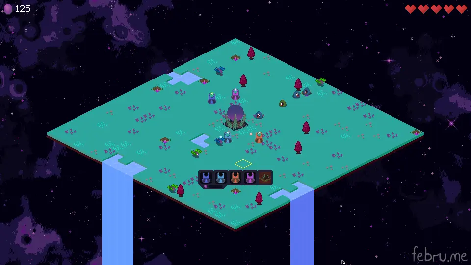

Island Defenders is an isometric tower defense game which is played on randomly generated map. It started as a school project in winter 2022. It took about 4 weeks and at least 15 litres of Lipton Ice Tea to get it finished.
Your main objective is to defend The Dark Altar which is located in the middle of the map.
There are two types of enemies: slimes and wasps. Wasps are quick but fragile. Slimes are slower but have more hp. Regardless of the type, enemies will always go towards the middle attacking mines and turrets encountered on their path. When they get near The Dark Altar they will attack it and you will lose one of your precious lives.
There are four types of turrets. Two of them are focused on dealing damage (Basic Turret, Fire Turret) and two of them are more support-oriented (Ice Turret, Magic Turret). Ice turrets slow enemies down and magic turrets stun them in place for three seconds.
Mines generate 20 crystals every 5 seconds. Crystals are in-game currency to buy new buildings like turrets. Mines can only be placed on special tiles which are randomly distributed around the map.
To place turrets or mines just right-click the selected tile. Building menu will pop up. You can also hover over different buildings to get more info about their current stats. After you lose all of your lives and the game is over, your final score is calculated based on amount of mined crystals, amount of monsters killed and difficulty level.
Coding and majority of graphics was done by me. Special thanks to DragoonXVIII#8211 for drawing enemies and providing mental support throughout the process of creating this game lmao.
Presentation (.pdf) - version 1.0 (~1.3MB)
Download for Windows (.zip with executable inside) - version 1.0 (~1.3MB)